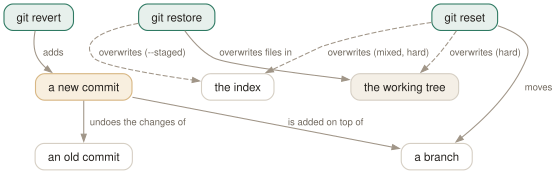

Day 08
Reset, restore, revert
Three commands with similar names that undo three different things.
By the end of today you can
- choose between
reset,restoreandrevertby asking what you want to change: a branch, some files, or the published record - predict exactly what
--soft,--mixedand--harddo to HEAD, the index and the working tree - fix the last commit with
--amend, and clear untracked debris withgit cleanwithout deleting something you wanted
Three names, three different undos
The git manual page is unusually direct about this. Under GIT COMMANDS it stops listing and explains: there are three commands with similar names, and they are not interchangeable. revert makes a new commit that reverses an old one. restore puts files back from the index or a commit and does not touch your branch. reset moves your branch, adding or removing commits from it — and can also restore the index, which is where the overlap and the confusion come from.
So the first question is never “how do I undo?” but what do I want to change: the files in front of me (restore), where my branch points (reset), or the shared record (revert).

reset moves a branch — history changes. restore overwrites files and leaves every branch alone. revert only ever adds a new commit, which is why it is the one you can use on history other people already have.Amend: the smallest rewrite
The most common undo is “that last commit is almost right”. git commit --amend builds a new commit from the current index, with the same parent as the old one, and moves the branch to it. With --no-edit it keeps the message; with -m it replaces it.
$ git log --format='%h %s'
52040e8 two
131350f one
$ git commit --amend -m 'two, better'
$ git log --format='%h %s'
3267113 two, better
131350f one
A new hash: the old 52040e8 still exists, but nothing points at it. On a commit you have not pushed, that is harmless. On one you have pushed, it is a rewrite, and Day 9 explains what that costs.
Reset moves the branch; the mode decides the collateral
git reset <rev> always does one thing first: it points the current branch at rev. The mode then decides how much of the rest follows along.
branch (HEAD) index working tree
--soft moved untouched untouched
--mixed moved = rev untouched (the default)
--hard moved = rev = rev (uncommitted work lost)
reset -- path not moved path = HEAD untouched (unstage)
Start with a file whose last commit added “two”, with “three” staged and “four” unstaged, and step back one commit in each mode:
[before] HEAD=two index=three wt=four
$ git reset --soft HEAD~ # HEAD=one index=three wt=four status: MM
$ git reset HEAD~ # HEAD=one index=one wt=four status: M
$ git reset --hard HEAD~ # HEAD=one index=one wt=one status: clean
HEAD is now at 131350f one
--soft- Undo the commit, keep everything staged.
reset --soft HEAD~3thencommitsquashes three commits into one. --mixed- Undo the commit and the staging; your edits are all still in the files. The way to re-slice a commit you got wrong.
--hard- Make everything look like rev. The only mode that can destroy work, because it overwrites files git never stored.
With a path, reset cannot move a branch — a branch is not per-file — so it only copies the path from HEAD into the index. That is unstaging, which git restore --staged (Day 2) does with a clearer name. Hence the refusal:
$ git reset --soft -- f.txt
fatal: Cannot do soft reset with paths.
Restore files, revert commits
git restore takes files from somewhere and writes them somewhere else. By default it writes the working tree from the index; --staged writes the index from HEAD; --source=<rev> takes them from any commit instead. The branch never moves.
$ git restore --source=HEAD~ f.txt # working tree only
$ git restore --source=HEAD --staged --worktree f.txt # both, from HEAD
git revert <commit> computes the inverse of that commit's change and commits it on top of your branch. Nothing is removed from history; a new commit is added, with a message that says so:
$ git revert --no-edit HEAD~1
[main 09e2d06] Revert "Lower the timeout"
1 file changed, 1 deletion(-)
$ git log -1 --format=%B
Revert "Lower the timeout"
This reverts commit 7c58bc14f0ab6d5c15414ee33c6cdf191a583bf9.
If later commits touched the same lines, the revert conflicts exactly as a merge does (Day 4), and you finish with git revert --continue or back out with --abort.
Clean: the one that deletes files git never had
The three commands above never touch untracked files. git clean is the one that does, and it refuses to run without -f because clean.requireForce defaults to true:
$ git clean
fatal: clean.requireForce is true and -f not given: refusing to clean
$ git clean -n
Would remove .gitignore
Would remove junk.tmp
$ git clean -nd
Would remove .gitignore
Would remove build/
Would remove junk.tmp
$ git clean -ndx
Would remove .gitignore
Would remove build/
Would remove debug.log
Would remove junk.tmp
-d adds untracked directories, -x adds ignored files too (debug.log was matched by .gitignore, which is itself untracked here and so on every list). Always run it with -n first and read the list; untracked files were never objects, so nothing on Day 11 brings them back.
Today's habit
Before undoing anything, say which of the three you are changing — branch, files or record — out loud if necessary, and pick the command by that. When it is the branch, prefer --soft or --mixed and reach for --hard only after reading git status.
Tomorrow: rebase, which is many small resets and re-commits in a row, and the reason force-pushing exists.
New vocabulary
Commands
| Command | Does |
|---|---|
git commit --amend | Replace the last commit with a new one built from the current index. Opens the editor. |
git commit --amend --no-edit | Amend, keeping the message: for the file you forgot to add. |
git reset --soft <rev> | Move the branch to rev. Index and working tree untouched. |
git reset <rev> | Move the branch and reset the index to it (--mixed, the default). Working tree untouched. |
git reset --hard <rev> | Move the branch, and overwrite index and working tree to match. Destroys uncommitted work. |
git reset -- <path> | Copy path from HEAD into the index: unstage. The branch does not move. |
git restore --source=<rev> <path> | Overwrite a working-tree file with its version from any commit. |
git revert <commit> | Make a new commit that undoes commit. The safe undo for published history. |
git clean -n | List the untracked files -f would delete. Add -d for directories, -x for ignored files. |
git clean -fd | Delete untracked files and directories. Ignored files survive unless -x. |
Drillsdo these in a real terminal, today
Self-check
Answer out loud first, then unfold.
You run git reset --hard HEAD~1 to throw away a commit, and only then remember that the working tree also had an hour of uncommitted edits. What can you get back?
The commit, easily: it still exists, and ORIG_HEAD (or HEAD@{1}, Day 11) names it, so git reset --hard ORIG_HEAD restores the branch. The uncommitted edits are a different matter. They were never objects in the store; --hard overwrote the files in place, and git has no record of them.
The one exception is anything you had git added: staging writes a blob, so a staged version may survive as a dangling object that git fsck --lost-found can find. Unstaged edits are gone. Before --hard, run git status and read it.
You amend a commit you had already pushed, and git push is rejected as non-fast-forward. Why, when you only changed the message?
--amend does not edit a commit; commits are immutable (Day 1). It makes a new commit with the same parent and moves the branch to it. The old commit is still on the remote, and the new one is not its descendant, so pushing it would discard the old one. That is a rewrite, and publishing a rewrite needs a force push (Day 9). If anyone may have fetched the old commit, the answer is a follow-up commit, not an amend.
A teammate reverts a bad merge on main, the feature is fixed on its branch, and merging the branch again brings in only the fix and none of the original work. Why?
A revert undoes a commit's changes, not its history. The merge is still an ancestor of main, so git considers every commit of the feature already merged; the new merge contributes only commits made since. The revert commit still sits on main undoing the original work.
The fix is to revert the revert before merging again. And reverting a merge at all needs -m 1 to say which parent is the mainline — Day 15 covers it.
git clean -fd deleted your untracked .env but left node_modules/ alone. Why the difference?
Because node_modules/ is ignored and .env was not. Without -x, git clean spares ignored files and deletes only untracked ones that are not ignored — often exactly the hand-made files you care about. Ignore local-only files properly (Day 14) and always run -n first; nothing clean deletes was ever in the object store, so the reflog cannot bring it back.
Cheat sheet
# change the BRANCH (rewrites history: local commits only)
git commit --amend [--no-edit] # redo the last commit
git reset --soft REV # move branch; keep index + files
git reset REV # move branch + index; keep files
git reset --hard REV # move all three; LOSES edits
git reset --hard ORIG_HEAD # undo the last reset/merge/rebase
# change FILES (branch never moves)
git restore [--staged] [--source=REV] PATH
# change the RECORD (safe on pushed history)
git revert COMMIT # new commit that undoes COMMIT
git clean -n / -fd / -fdx # untracked / +dirs / +ignored
Everything through Day 08
Commands
| Command | Does |
|---|---|
git init -b main | Create an empty repository whose first branch is main. |
git hash-object <file> | Print the object name the file's contents would get. Writes nothing without -w. |
git cat-file -t <object> | Print an object's type: blob, tree, commit or tag. |
git cat-file -p <object> | Pretty-print an object's contents. The one command that shows what git really stores. |
git cat-file -s <object> | Print an object's size in bytes. |
git ls-tree -r <tree-ish> | List every blob in a tree, recursively, with mode and hash. |
git rev-parse HEAD | Turn a name into the full hash it currently means. |
git count-objects -v | Count loose and packed objects and the disk they use. |
git status -s | Show each changed path with two columns: index vs HEAD, then working tree vs index. |
git add <path> | Copy the file's current contents into the index. Writes the blob immediately. |
git add -p | Walk through each hunk and choose which ones go into the index. |
git diff | Show what differs between the index and the working tree — what add would stage. |
git diff --staged | Show what differs between HEAD and the index — what commit would record. |
git restore <path> | Overwrite the working-tree file with the index version. Discards unstaged edits. |
git restore --staged <path> | Reset the index entry to HEAD's version. The working tree is untouched. |
git commit [-a] | Turn the index into a tree, wrap it in a commit, move the branch to it. -a first stages every modified tracked file (never untracked ones). |
git rm --cached <path> | Remove a path from the index only; the file stays on disk, now untracked. |
git branch | List local branches; * marks the one HEAD names. |
git branch -v | List branches with the commit each points at and its subject line. |
git branch <name> | Create a branch at HEAD without switching to it. |
git switch <branch> | Point HEAD at a branch and update the index and working tree to its commit. |
git switch -c <name> | Create a branch at HEAD and switch to it in one step. |
git switch - | Switch back to the branch you were on before. |
git switch --detach <commit> | Point HEAD directly at a commit, with no branch in between. |
git branch -d <name> | Delete a branch, refusing unless it is merged into its upstream (or into HEAD, if it has none). |
git branch -D <name> | Delete a branch unconditionally. |
git branch -m <old> <new> | Rename a branch. |
git merge <branch> | Bring the branch's history into the current one: fast-forward if possible, else a merge commit. |
git merge --ff-only <branch> | Merge only if it is a fast-forward; otherwise refuse and change nothing. |
git merge --no-ff <branch> | Always create a merge commit, even when a fast-forward was possible. |
git merge --abort | Give up a conflicted merge and restore the state before it started. |
git merge-base A B | Print the best common ancestor of two commits — the version a merge compares against. |
git ls-files -u | List the unmerged index entries: one line per stage per conflicted path. |
git show :1:<path> | Show the base version of a conflicted file. :2: is yours, :3: theirs. |
git checkout --conflict=merge <path> | Recreate the conflict markers in a file you mangled; =zdiff3 works too. |
git clone <url> | Copy a repository: all objects, its branches as origin/*, and one local branch checked out. |
git remote -v | List remotes with their fetch and push URLs. |
git remote add <name> <url> | Register another repository under a short name. |
git fetch | Download new objects and move the remote-tracking refs. Never touches your branches or files. |
git pull | Fetch, then integrate the upstream into the current branch. |
git push | Send the current branch's commits and move the branch of the same name on the remote. |
git push -u origin <branch> | Push and record origin/<branch> as this branch's upstream. |
git push origin --delete <branch> | Delete a branch on the remote. |
git branch -vv | List branches with their upstream and ahead/behind counts. |
git log --oneline --graph --all | Draw every branch's history, one line per commit. |
git log -p | Show each commit's diff against its parent. |
git log --stat | Show which files each commit touched, and how much. |
git log --author=<re> --since=<date> | Keep only commits whose author matches, from a date onwards. |
git log -- <path> | Keep only commits that changed the path. The -- separates paths from revisions. |
git log --follow -- <file> | Follow one file's history back through renames. |
git log -S<string> | Pickaxe: keep commits that change how many times the string occurs. |
git log -G<regex> | Keep commits whose diff adds or removes a line matching the regex. |
git log -L :<func>:<file> | Show the history of one function (or -L 10,20:file for a line range). |
git show <commit> | Show one commit: message and diff. |
git blame -w -C <file> | Annotate each line with its last commit, ignoring whitespace and seeing moves between files. |
git rev-parse --verify <rev> | Resolve an expression to one object name, or fail. The checker for everything today. |
git rev-parse --abbrev-ref <rev> | Print the short ref name an expression means: @{u} becomes origin/main. |
git rev-parse --symbolic-full-name <rev> | Print the full ref name, e.g. refs/remotes/origin/main. |
git log A..B | List commits reachable from B but not from A: what B has that A lacks. |
git log --left-right A...B | List commits on either side but not both, marked < or >. |
git diff A...B | Diff from the merge base of A and B to B: what B changed since they split. |
git show <rev>:<path> | Print a file as it was in any commit, without checking anything out. |
git show :<path> | Print the version of a file currently staged in the index. |
git commit --amend | Replace the last commit with a new one built from the current index. Opens the editor. |
git commit --amend --no-edit | Amend, keeping the message: for the file you forgot to add. |
git reset --soft <rev> | Move the branch to rev. Index and working tree untouched. |
git reset <rev> | Move the branch and reset the index to it (--mixed, the default). Working tree untouched. |
git reset --hard <rev> | Move the branch, and overwrite index and working tree to match. Destroys uncommitted work. |
git reset -- <path> | Copy path from HEAD into the index: unstage. The branch does not move. |
git restore --source=<rev> <path> | Overwrite a working-tree file with its version from any commit. |
git revert <commit> | Make a new commit that undoes commit. The safe undo for published history. |
git clean -n | List the untracked files -f would delete. Add -d for directories, -x for ignored files. |
git clean -fd | Delete untracked files and directories. Ignored files survive unless -x. |
Options
| Option | Does |
|---|---|
user.name / user.email | Set the identity written into every commit's author and committer lines. |
init.defaultBranch | Name the first branch of every new repository. |
commit.verbose | Show the staged diff below the message in the commit editor. |
branch.sort | Set the default order of git branch; -committerdate puts recent work first. |
merge.conflictStyle | Choose the marker style: merge (default), diff3 or zdiff3. |
pull.ff | only: let git pull fast-forward and refuse anything else. |
push.autoSetupRemote | Make a plain git push of a new branch create it upstream and track it. |
fetch.prune | Delete remote-tracking refs whose branch was deleted on the remote, on every fetch. |
diff.colorMoved / diff.colorMovedWS | Colour moved blocks differently from added and removed ones; allow-indentation-change still recognises a re-indented move. |